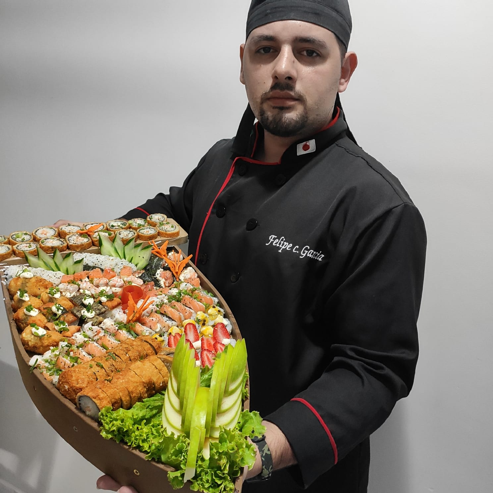

Flor de Lótus – Experiência Gastronômica
Combinados
cada combinado uma experiencia.

Uma Experiência Além do Prato
Cada detalhe da Flor de Lótus é pensado para criar uma experiência sensorial completa. Da escolha dos ingredientes à apresentação, tradição e sofisticação caminham juntas em cada prato servido.
Sobre o Sushi Man & Proprietário
Minha história na cozinha começou há mais de 15 anos, movida pela paixão pela gastronomia e pelo respeito aos ingredientes. Há 10 anos atuo como sushi man, aperfeiçoando técnicas, sabores e a apresentação de cada prato.
Há 5 anos fundei o Flor de Lótus Culinária Oriental, onde assumi também o papel de proprietário. Desde então, desenvolvi cardápios, participei da inauguração de outras casas e restaurantes, e treinei profissionais que hoje atuam como sushi mans.
Atualmente, meu foco é a excelência: qualidade acima de tudo, atenção absoluta aos detalhes e a entrega de uma experiência que vai além do prato.
